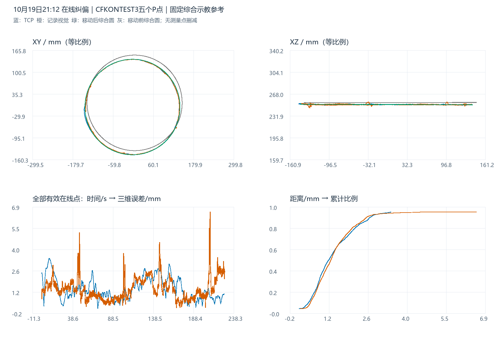

五个P点在线纠偏测试：
移动后综合示教参考下的轨迹误差分析
固定参考：仍是此前四组历史示教等权综合的原始示教圆，半径 142.035339635 mm。本组只根据已有的记录视觉拟合圆心与法线，刚体移动该综合示教，不缩放、不用TCP寻优、不重选半径。由于没有融合前KCF诊断，本组参考的位姿来源与后续“原始KCF定位”的报告有所不同；几何距离定义相同，但证据条件不完全相同。移动后参考不是独立真实焊缝测量。
1. 原始数据、五个P点与结束状态
本会话只有session_summary、actual_robot_path、initial_correction和realtime_correction四类文本。机器人记录4,151条，视觉采样3,692条。TCP按online_running、CORFLAG=1、DETFLAG=1、S_START=1、S_HOLD=0、ALARM=0筛选，保留2,582点；视觉按vision_sample、online_running、vision_valid=1筛选，保留3,188点。未平滑、未删除有效峰值。
initial_correction中有5条teach_point初始命令，与session_summary的initial_command_count=5一致，原始记录另存为五个初始点命令表。这确认了五点发送记录；没有完整的历史JBI/程序版本快照，不能只靠目录名证明其它运行条件与后续各组相同。当前综合参考来自既有历史综合，不将这五个控制点当成五组独立焊缝测量重复计权。
有效TCP：21:13:00.502–21:16:47.344；有效视觉：21:13:00.494–21:16:47.477。排除waiting_robot_program_stop阶段的1,097条机器人记录。最终session_state=error，原始消息如下：
在线纠偏超时：等待机器人主程序停止超过120秒。当前sStart=1, corflag=0, detflag=0, offline=0, JBI行=21。
该记录说明程序在等待停止确认时超时，不能把本会话写成流程正常完成；也不能仅凭超时就判定此前在线运动的几何数据全部无效。本报告只评价已记录的有效在线段，不覆盖停止等待阶段或未记录路径。
2. 视觉记录的含义与坐标
realtime_correction中的vision_x/y/z保存视觉结果点；其消息属于KCF/Gabor检测链路，但没有before_fusion像素、融合标记、增益、原始图像或同帧机器人姿态诊断，不能拆出原始KCF与融合后视觉，也不能据此认定“仅KCF”或“自动卡尔曼”模式。本报告统一命名“记录视觉输出（融合状态未知）”。session_summary有enable_online_icp=true，但没有轨迹ICP批次明细或局部表面配准/写回归档，无法核实应用次数与实际位姿修正效果。
坐标统一到变位机末节随动坐标系（材料系）。TCP先由RBCALIB从机器人基系转固定站系，再逐点消除Ry(S1)Rz(S2)；记录视觉已经在变位机工具TCP系，Z加回231 mm恢复末节原点。initial_correction里的tcp_offset三轴记录与(0,0,231)一致。视觉坐标不再使用插值外轴重复旋转，不为材料系距离强行配对TCP时间。
视觉timestamp_ms是记录时间，缺少独立camera_timestamp_ms，时间图仅作为记录顺序/时段观察，不解释为已校准的采集时延。切换工具TCP系时只需所有圆心Z减231 mm，半径和误差不变。
3. 四轨迹三维图与XYZ波动
蓝：TCP；橙：记录视觉输出；灰色虚线：移动前综合示教；绿：移动后综合示教。支持三维、XY、XZ、YZ视角、两组示教独立切换和Z显示倍率，默认1×等比例。生成W点是综合参考采样，不是新增实测点；倍率不改变坐标或误差。
测量点相对参考圆最近点的ΔX、ΔY、ΔZ
下图是各测量点减去圆周最近点，不是TCP与视觉按同一时刻的差；无平滑、无剔除。

4. 综合示教来源、移动及误差结果
| 历史示教 | W点数 | 拟合半径/mm | 综合权重 |
|---|---|---|---|
| 20230608CHUFENGKOU | 1687 | 140.6477 | 25% |
| 20250606CHUFENGKOU | 1663 | 141.6920 | 25% |
| 20260308CHUFENGKOU | 1355 | 142.0846 | 25% |
| 20260404CHUFENGKOU1 | 1368 | 143.7170 | 25% |
沿用同一四组综合圆，不重新拟合本组半径。原始综合圆心/法线不变，移动后与本组记录视觉拟合中心/法线一致；半径不变。绕法线相位不可辨识，采用最小旋转。下表TCP和视觉拟合圆仅用于描述，不替代原始轨迹。
| 圆 | 圆心X/mm | 圆心Y/mm | 圆心Z/mm | 半径/mm | 单位法线 |
|---|---|---|---|---|---|
| 固定综合原始示教（移动前） | 4.4924 | 8.9094 | 253.9076 | 142.0353 | -0.000832582, 0.001575923, 0.999998412 |
| 移动后综合示教参考 | -1.8020 | -3.4852 | 250.6412 | 142.0353 | 0.002355884, 0.002716194, 0.999993536 |
| TCP 实际轨迹拟合圆 | -2.7651 | -3.5866 | 250.6627 | 141.2024 | 0.002935610, 0.002933950, 0.999991387 |
| 记录视觉输出（融合状态未知）拟合圆 | -1.8020 | -3.4852 | 250.6412 | 140.8932 | 0.002355884, 0.002716194, 0.999993536 |
| 轨迹 | 点数 | 平均/mm | 最大/mm | RMSE/mm | P95/mm | ≤2 mm | ≤3 mm | >3 mm点数 |
|---|---|---|---|---|---|---|---|---|
| TCP 实际轨迹 | 2582 | 1.3610 | 3.4565 | 1.5437 | 2.7368 | 78.74% | 97.79% | 57 |
| 记录视觉输出（融合状态未知） | 3188 | 1.3838 | 6.5503 | 1.5551 | 2.5994 | 81.78% | 97.80% | 70 |
c = 移动后综合圆心；n = 单位法线；R = 固定综合半径142.035339635 mm h = (p-c)·n；ρ = ||(p-c)-h n|| e = √((ρ-R)²+h²) 平均 = mean(e)；最大 = max(e)；RMSE = √mean(e²)
与后续综合报告相同，使用到连续三维综合圆周的解析最短距离，不混用原单组示教折线、最近采样点或行号配对误差。统计按记录样本加权，不按弧长/时间加权，不评价姿态角或沿缝时滞。3 mm用于观察偏离，不擅自定义工艺合格线。
5. 误差分量、时间分布与峰值
| 轨迹 | 径向有符号均值/mm | 径向RMSE/mm | 离面有符号均值/mm | 离面RMSE/mm | ΔX RMSE/mm | ΔY RMSE/mm | ΔZ RMSE/mm |
|---|---|---|---|---|---|---|---|
| TCP 实际轨迹 | -0.7845 | 1.4224 | 0.0219 | 0.6000 | 1.1529 | 0.8320 | 0.6015 |
| 记录视觉输出（融合状态未知） | -1.1432 | 1.3652 | -0.0032 | 0.7448 | 1.1074 | 0.7984 | 0.7449 |
有符号径向/离面均值可能抵消，整体评价以非负三维距离和RMSE为准。参考位姿由记录视觉估计，可吸收整体位置/倾角偏差，不能把分量当作独立标定误差。
| 轨迹 | 时段 | 点数 | 平均/mm | RMSE/mm | 最大/mm | >3 mm点数 |
|---|---|---|---|---|---|---|
| TCP 实际轨迹 | 前60秒 | 679 | 1.5656 | 1.7597 | 3.4565 | 49 |
| TCP 实际轨迹 | 60秒以后 | 1903 | 1.2879 | 1.4590 | 3.0768 | 8 |
| 记录视觉输出（融合状态未知） | 前60秒 | 851 | 1.4819 | 1.5840 | 5.1691 | 19 |
| 记录视觉输出（融合状态未知） | 60秒以后 | 2337 | 1.3481 | 1.5445 | 6.5503 | 51 |
前60秒从保留轨迹的最早时间起算，不是会话启动时刻；所有有效起始点均保留。TCP最大值发生在21:13:09.941；记录视觉最大值发生在21:16:29.538。峰值事件按相邻记录都超3 mm归组，记录间隔超过200 ms拆分，下表最多列15段。
| 轨迹 | 开始 | 结束 | 点数 | 最大/mm | 峰值径向/mm | 峰值离面/mm |
|---|---|---|---|---|---|---|
| 记录视觉输出（融合状态未知） | 21:16:28.444 | 21:16:29.803 | 18 | 6.5503 | -3.1239 | -5.7574 |
| 记录视觉输出（融合状态未知） | 21:13:47.372 | 21:13:47.739 | 6 | 5.1691 | -3.5917 | -3.7174 |
| 记录视觉输出（融合状态未知） | 21:15:26.327 | 21:15:27.147 | 12 | 4.5126 | -1.1931 | 4.3520 |
| 记录视觉输出（融合状态未知） | 21:13:47.050 | 21:13:47.250 | 4 | 4.0372 | -3.4182 | -2.1483 |
| 记录视觉输出（融合状态未知） | 21:13:45.488 | 21:13:45.968 | 8 | 3.8057 | -0.6084 | 3.7568 |
| 记录视觉输出（融合状态未知） | 21:14:42.048 | 21:14:42.276 | 4 | 3.7986 | 3.6617 | 1.0107 |
| 记录视觉输出（融合状态未知） | 21:13:45.318 | 21:13:45.318 | 1 | 3.5681 | 0.0203 | 3.5680 |
| 记录视觉输出（融合状态未知） | 21:15:27.284 | 21:15:27.284 | 1 | 3.5458 | -2.8965 | 2.0453 |
| 记录视觉输出（融合状态未知） | 21:16:38.565 | 21:16:38.808 | 4 | 3.5090 | -3.3301 | 1.1063 |
| TCP 实际轨迹 | 21:13:08.109 | 21:13:12.431 | 49 | 3.4565 | 3.0062 | 1.7060 |
| 记录视觉输出（融合状态未知） | 21:15:27.456 | 21:15:27.529 | 2 | 3.4374 | -3.2745 | -1.0456 |
| 记录视觉输出（融合状态未知） | 21:15:27.908 | 21:15:28.106 | 4 | 3.4044 | -3.3796 | -0.4106 |
| 记录视觉输出（融合状态未知） | 21:16:46.309 | 21:16:46.309 | 1 | 3.2677 | -3.0820 | 1.0857 |
| TCP 实际轨迹 | 21:15:38.549 | 21:15:39.134 | 8 | 3.0768 | -2.9780 | 0.7734 |
| 记录视觉输出（融合状态未知） | 21:16:39.151 | 21:16:39.207 | 2 | 3.0604 | -2.9486 | 0.8195 |
最大记录视觉偏离为6.550 mm，发生在21:16:29.538，径向分量-3.124 mm、离面分量-5.757 mm。没有该时刻的图像与融合前诊断，不能据此断言是KCF跳点、融合、真实焊缝局部形状或机器人状态延迟造成。完整事件与作业行指标均保留在附件中。
6. 覆盖缺口与参考敏感性
有效视觉周向覆盖约353.255°，最大未采样扇区约6.745°，首末记录点距离17.143 mm。图中不补闭合线，不把未观测扇区当成测得的路径。参考圆是连续几何，因此仍可定义有效点到参考的距离，但无法证明缺口区域的真实误差或完整闭环表现。
交错20°扇区留出：一半估计中心/法线，另一半评价，记录视觉合并RMSE为1.570 mm，半径始终固定。留出降低同点重复使用，仍不能消除共享视觉和标定偏差。以下历史示教留一组敏感性仅作边界展示，不据此挑选更好半径。
| 轨迹 | 留一组示教：平均范围/mm | RMSE范围/mm | 最大范围/mm |
|---|---|---|---|
| TCP 实际轨迹 | 1.108–1.676 | 1.348–1.823 | 3.357–3.954 |
| 记录视觉输出（融合状态未知） | 1.024–1.776 | 1.205–1.921 | 6.302–6.783 |
7. 与后续四组会话的描述对照
| 会话 | 轨迹类型 | 点数 | 平均/mm | 最大/mm | RMSE/mm | ≤3 mm |
|---|---|---|---|---|---|---|
| 10/19 21:12 五个P点 | TCP | 2582 | 1.3610 | 3.4565 | 1.5437 | 97.79% |
| 10/19 21:12 五个P点 | 记录视觉（融合状态未知） | 3188 | 1.3838 | 6.5503 | 1.5551 | 97.80% |
| 10/20 20:22 自动卡尔曼 | TCP | 7717 | 0.8472 | 2.4605 | 0.9626 | 100.00% |
| 10/20 20:22 自动卡尔曼 | 最终视觉 | 7418 | 0.8644 | 6.2516 | 1.0245 | 99.03% |
| 10/20 20:41 仅KCF | TCP | 7803 | 0.9373 | 2.9684 | 1.0832 | 100.00% |
| 10/20 20:41 仅KCF | 最终视觉 | 11359 | 0.9157 | 7.2023 | 1.1063 | 98.64% |
| 10/21 15:23 自动卡尔曼 | TCP | 5848 | 0.7838 | 2.5685 | 0.8950 | 100.00% |
| 10/21 15:23 自动卡尔曼 | 最终视觉 | 7522 | 0.7665 | 6.3021 | 0.8959 | 99.69% |
| 10/21 16:32 固定0.1/0.9 | TCP | 5855 | 0.8479 | 3.8369 | 0.9853 | 99.16% |
| 10/21 16:32 固定0.1/0.9 | 最终视觉 | 7597 | 0.8129 | 3.4266 | 0.9206 | 99.92% |
统一参考几何和误差公式，但本组位姿来自融合状态未知的记录视觉，后续各组来自融合前KCF。为避免把早期输出冒充原始KCF，表中视觉行对照后续的最终视觉输出；存在观测条件和参考定位来源差异，不是完全同条件实验。
本组TCP与记录视觉的平均误差/RMSE均高于后续已分析的四组。不同批次、有效运动时长、观测覆盖、程序状态及标定历史可能共同影响结果；不能据此认定五个P点方案必然较差，或推断某个ICP/融合开关带来了确定改善。若要研究五点方案，应在相同工件位置和运行条件下进行配对重复测试。
8. 复核、附件与后续建议
TCP坐标正逆变换最大回算差1.03e-13 mm；与此前独立保存的本会话坐标结果对照，TCP和视觉最大差分别1.85e-13、2.84e-14 mm。初始修正后的1368点相对原工作轨迹保形平移残差3.26e-14 mm。这里复核坐标解释的一致性，不把历史分析当成独立真值。
建议优先核对21:13:09附近的TCP偏离和21:16:29附近的视觉峰值，并单独排查21:18:47的停止确认超时。该会话没有原始图像/融合诊断，无法在现有记录上完成同帧像素回放或融合前后归因；如需继续比较五P点效果，应补充这些记录，并保留运行时JBI和标定版本。综合圆仍是事后估计参考，不是独立测得的移动后焊缝。
离线HTML包含三维和XYZ交互图、静态预览、Plotly本地依赖及生成脚本。复现依次运行本目录analyze.py、build_report.py、verify.py。浏览器采用无鼠标渲染及DOM事件检查，手动拖拽/缩放/平移未验收。所有新增产物在本目录，原始输入和先前分析只读。